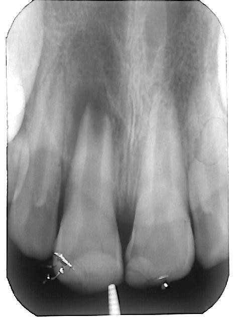
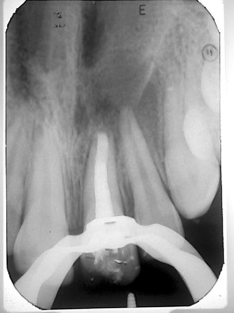

טיפול שורש בשן שלא סיימה את התפתחותה
בשן קבועה צעירה שלא סיימה את התפתחותה, השורשים עדיין לא מפותחים מספיק ולכן הם קצרים יותר, עם קירות דקים ותעלות רחבות שמסתיימות עם פתח רחב. לפני טיפול בשיניים אלו יש חשיבות לאבחנה של מצב הרקמה הפנימית, היות שאם הרקמה תקינה, ניתן למנוע טיפול שורש ולתת לשן להמשיך להתפתח. במצבים בהם הרקמה הפנימית של השן אינה תקינה, מבצעים טיפול שורש. טיפולי השורש בשיניים אלו מבוצעים בשיטות שונות, תלוי בשלב ההתפתחות שבו השורשים נמצאים.
הצגת מקרים
מקרה 1
צילום אבחנתי

אחרי הוצאת סתימת השורש

בסיום הטיפול

צילום ביקורת
אחרי חצי שנה

מקרה 2
צילום אבחנתי

בסיום טיפול השורש
לאחר חודש וחצי, ניתן לראות ריפוי של הנגע הסב-חודי

מקרה 3
אבחנתי

סופי
מקרה 4
אבחנתי

סופי